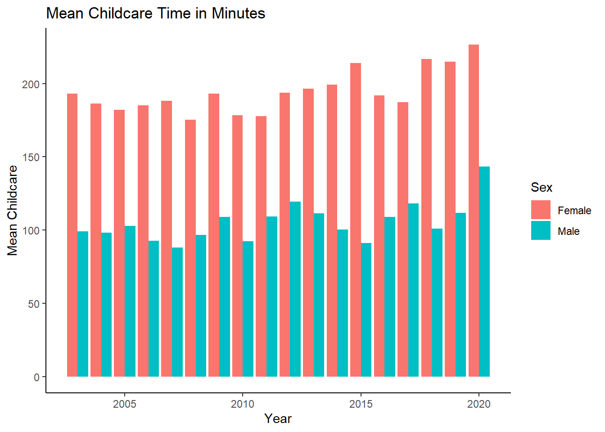
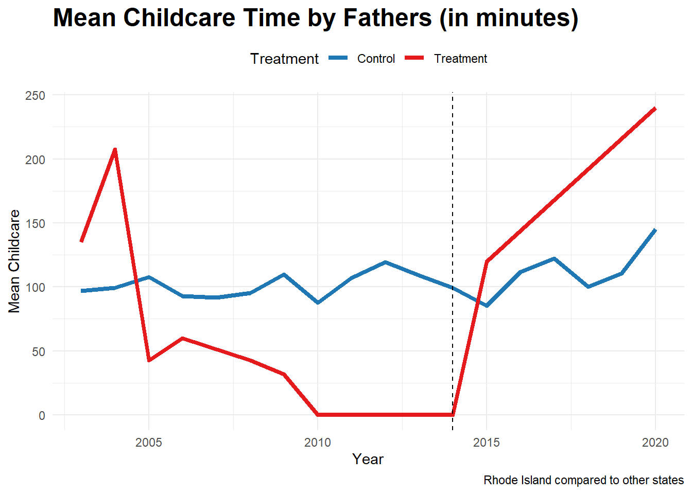
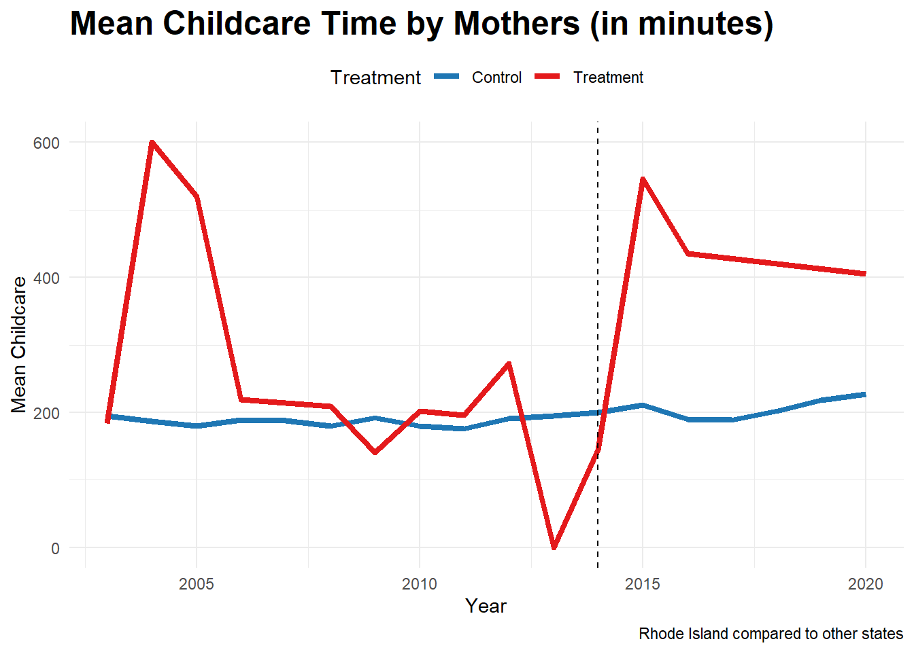
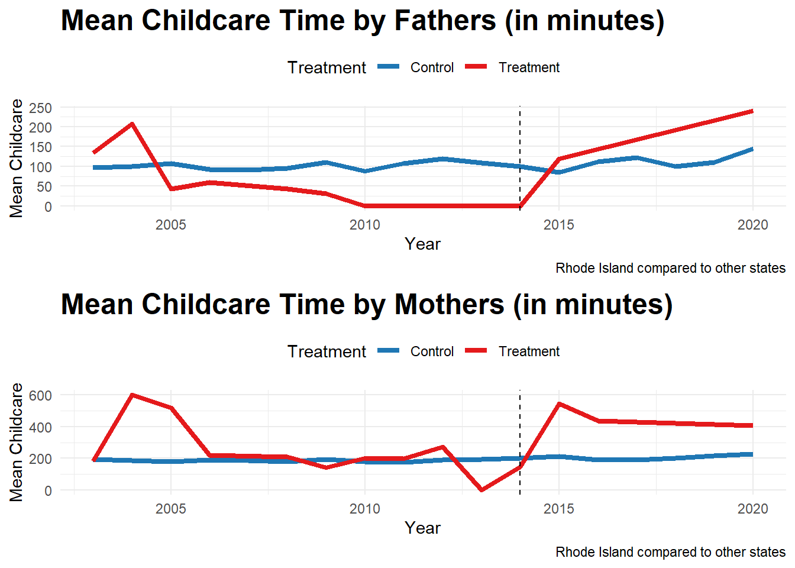
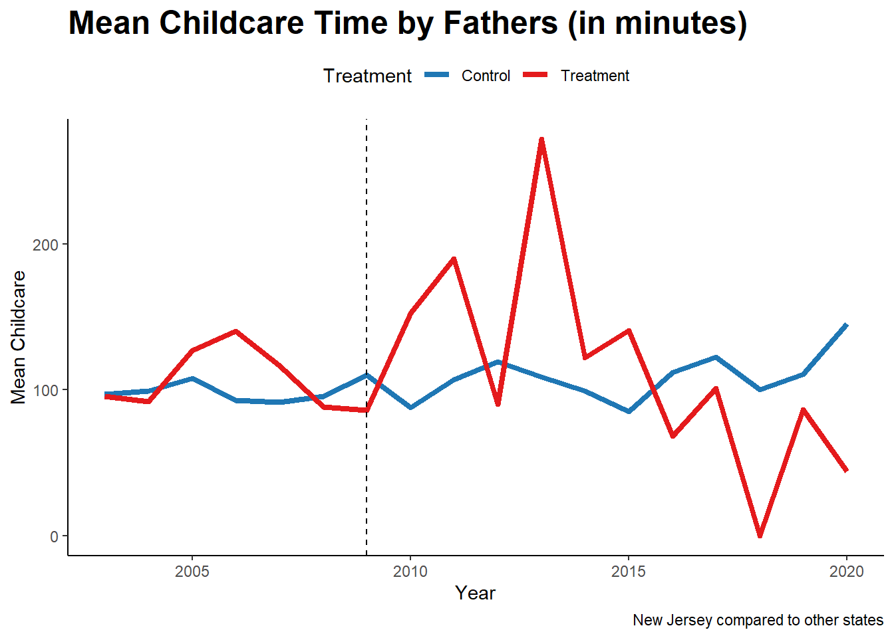
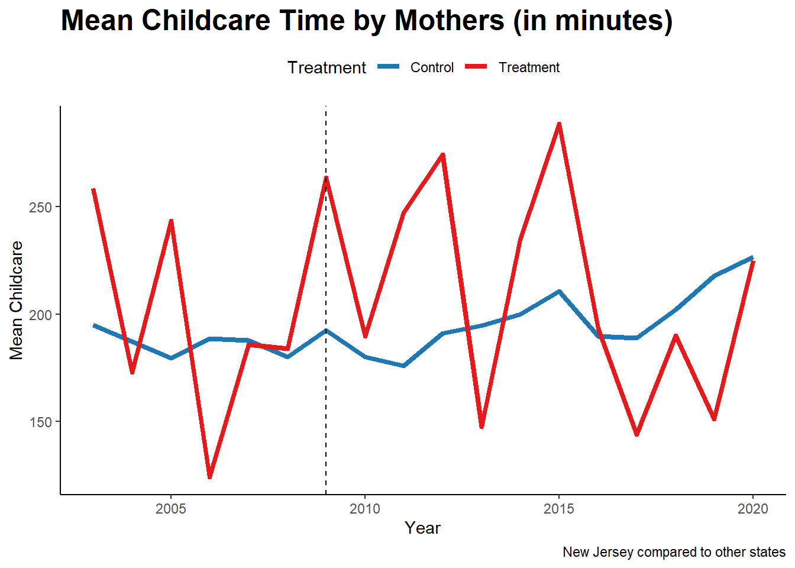
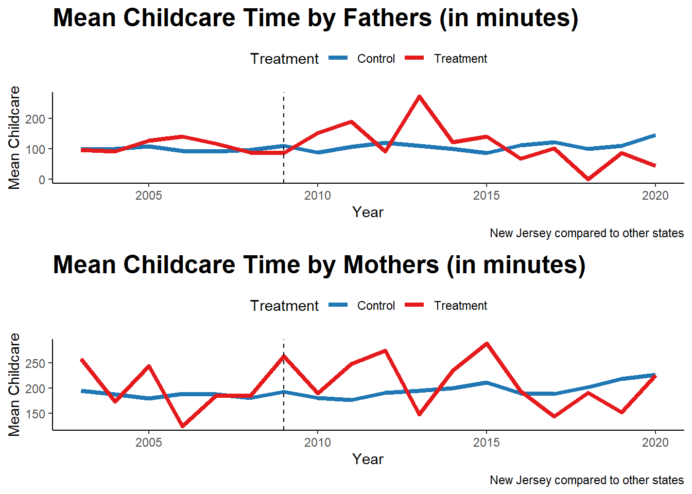
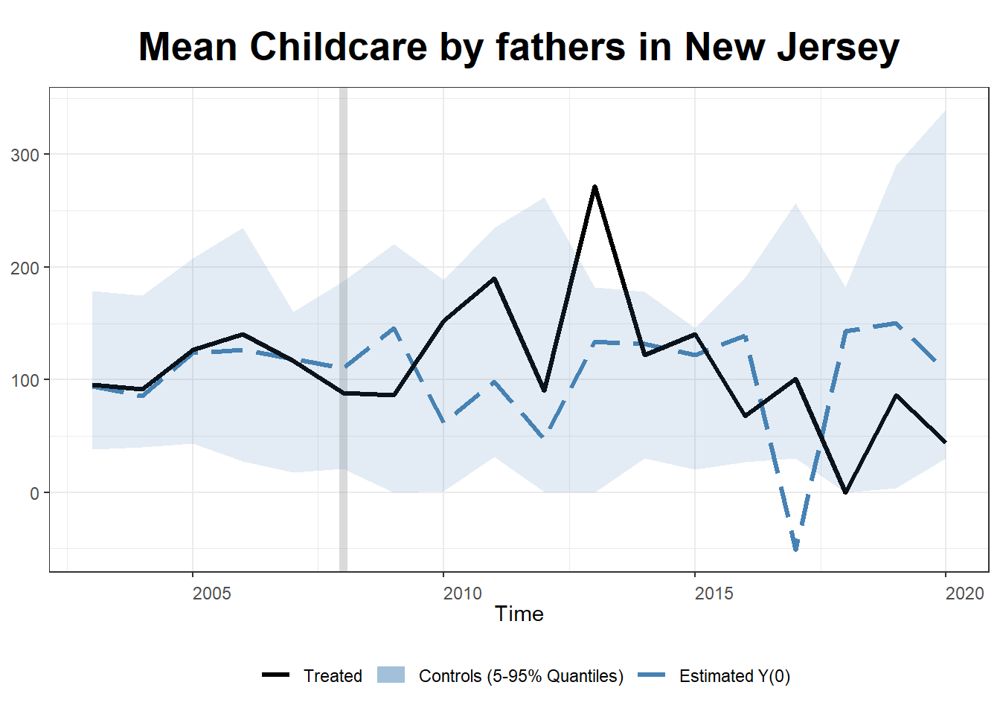
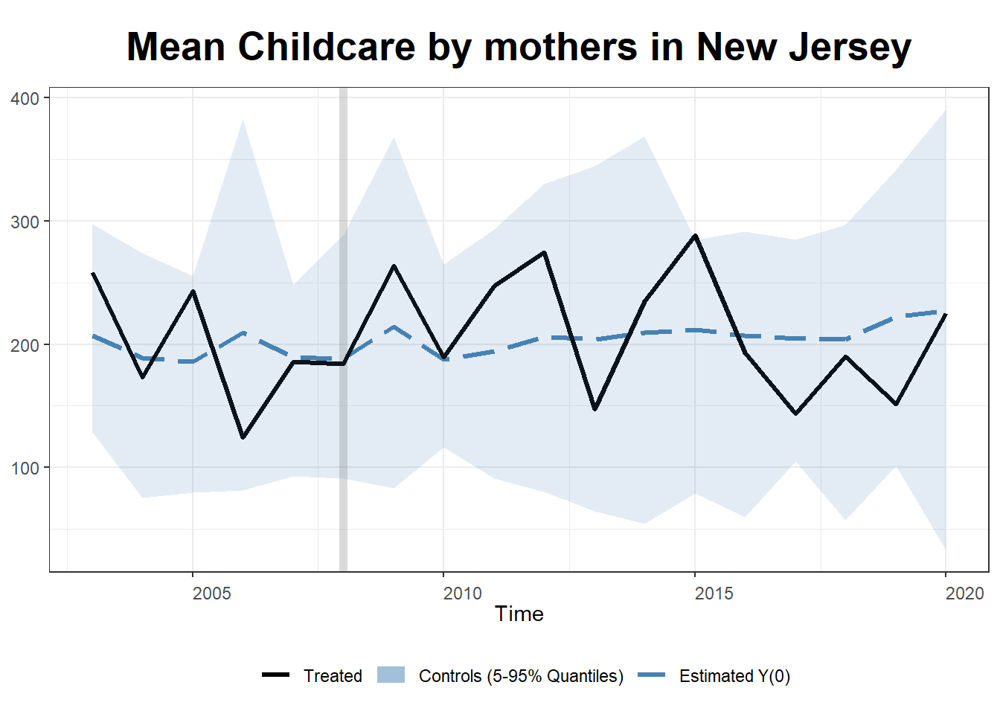

library(knitr)
library(tidyverse)
library(readr)
library(ggplot2)
library(readr)
library(dplyr)
library(gsynth)
library(plm)
library(gridExtra)
library(kableExtra)
knitr::opts_chunk$set(echo = TRUE, warning=FALSE, message=FALSE)Final Project Assignment#3: Aritra Basu
final_Project_assignment3
final submission
Final Project Final Submission
Part 1. Introduction
This paper looks at how parental time spent in active childcare changes due to paid family leave laws in Rhode Island (PFL was implemented in 2014) and New Jersey (PFL was implemented in 2009). It uses data from the American Time Use Survey that contains data on various activities, including childcare. Each case in the ATUS dataset represents a specific person and includes their demographic information, as well as the detailed information about how they spent their time during a designated time period.
Part 2. Background, Dataset Introduction and Data Description
Background:
Parenthood and inequity
Parenthood exerts substantial impact on women’s economic life in heterosexual couples, which could potentially explain a part of the gender wage gap (Blau and Kahn (2017)). With parenthood, women experience decline in work hours, employment, and earning (Budig and England (2001)). The negative effects seem to be unbalanced, and substantially skewed against women.
A brief history of paid family leave.
The Family and Medical Leave Act was only passed in 1993, and guaranteed 12 weeks of unpaid leave for eligible mothers. In 2004, Paid Family Leave first arrived at the US, as family leave benefits became available in California through the Family Leave Insurance Program (Engeman (2020)). The US continues to be an exception among high-income countries that does not have an universal paid family leave program. This, is an indicator that the United States is an outlier among high-income countries for the near absence of social policy aimed at facilitating work-family balance (Engeman (2020); Kaufman and Petts (2020)). After California, state paid leave policies have been implemented in New Jersey (2009), Rhode Island (2014), New York (2018) and more recently in New Washington, Massachusetts, Oregon and Connecticut. Many of these policies differ on the dimensions of leave length, eligibility and leave length.
Rossin-Slater et al. (2013) show that CA-PFL implementation increased the weekly work hours of employed mothers of 1 to 3 year-old children from 10 to 17 percent and that it more than doubled the overall use of maternity leave. However, the impact of employment outcomes appear to be mixed. Baum and Ruhm (2016) observe that CA-PFL raised employment probabilities of some mothers by 23 percent and increase in hours and weeks of work in the year immediately after childbirth. On the other hand, Das and Polachek (2015) find increase in labor force participation rates as well as unemployment rates and unemployment duration in the years after implementation.
In this context, I intend to investigate the differences that happen in time use after paid family leave laws are implemented. Given that paid family leave provides the fathers to avail leave after childbirth, I anticipate that this allows them actually provide childcare, thereby altering childcare more equitable after PFL.
Dataset Introduction:
The American Time Use Survey (ATUS) is a nationwide survey conducted by the Bureau of Labor Statistics (BLS) in the United States. It collects data on how people spend their time on a daily basis, including work, household chores, leisure activities, and more. The survey is used to estimate time use patterns and understand differences across various groups.
I will be combining three data files.
The first is the ATUS respondent file. This is a dataset that provides detailed information about the respondents who participated in the American Time Use Survey (ATUS). The respondent file includes demographic characteristics of the respondents, such as age, sex, race, and ethnicity, as well as information about their employment status, occupation, and industry, as well as information on various activities. Each respondent has an unique ID and has their information for that row.
The second is the ATUS CPS file. The ATUS CPS (Current Population Survey) file is a dataset that combines data from the ATUS with data from the Current Population Survey (CPS). The CPS is a monthly survey conducted by the U.S. Census Bureau for the BLS that collects information about the labor force, employment, and other economic indicators. The ATUS CPS file includes information from both surveys to provide a more comprehensive picture of how people spend their time and how it relates to their labor force status.
The third is the activity summary file. This file provides summary statistics of the time use data collected in the ATUS. The detailed breakdown of categories are provided in the ATUS coding lexicon.
Each case in the combined ATUS dataset will represent a specific person and includes some of their demographic information, and time spent on different categories of childcare.
Data Description
I have merged the three datasets using their CASEIDs. Then I have retained respondents that have at least one household child of their own less than 2 years. Then I have retained only observation on respondents that do not have missing values for secondary care provision for household children. The final file that I have retains a small subset of variables including an unique identifier, age, sex, number of children in the household and some specific time use variables on active childcare. By active childcare, I mean care time where the care giver is actively helping the child in some activity.
my_data <- read_csv("D:/github/Economic History 763/ATUS Data/atusresp_0320.dat") # This is the respondent file.
my_data2 <- read_csv("D:/github/Economic History 763/ATUS Data/atuscps_0320.dat")
filtered_my_data2 <- my_data2 %>%
filter(TULINENO == 1) %>%
select(TUCASEID, GESTFIPS)
# TULINENO is the respondent identifier. I only need the state id, GESTFIPS from the CPS file.
merged_data12 <- left_join(my_data, filtered_my_data2, by = c("TUCASEID")) # Here I merge the respondent and CPS files.
my_data3 <- read_csv("D:/github/Economic History 763/ATUS Data/atussum_0320.dat") # The activity summary file contains time use variables.
merged_data_final <- left_join(merged_data12, my_data3, by = c("TUCASEID"))
final_data_with_children <- merged_data_final %>%
filter(TROHHCHILD == 1, TRYHHCHILD.x < 2, TRTCC!=-1) # TROHHCHILD indicates the presence of a child in the household. TRTCC is a measure of secondary childcare and is given a value of -1 for respondents who do not engage in secondary childcare. Finally, TRYHHCHILD.x is the age of the child.
selected_df <- select(final_data_with_children, TUCASEID, TEAGE, TESEX, TRCHILDNUM.x, TUYEAR.x, starts_with("t0301"), starts_with("t0302"), starts_with("t0303"), GESTFIPS) # The variables t301, t302 and t303 are various measures of active childcare.
rm(my_data, my_data2, filtered_my_data2, my_data3, merged_data_final)
rm(merged_data12)I intend to compute active childcare, and hence I have retained a subset of variables whose headings start with t, for three specific activities: caring for and helping household children, children’s education and health. Thus the dataset has the unique respondent identifier, their age, sex, state, number of children, and the activity times that would be added to find the total childcare time.
Using the function mutate, I have created the variable childcare. Here I am presenting the summary statistics for childcare, where the respondents have been grouped by sex and year and state. But alternative groupings (such as by only sex and year) are possible.
data_ready <- selected_df %>%
mutate(Childcare = rowSums(select(., starts_with("t0301"))) + rowSums(select(., starts_with("t0302"))) + rowSums(select(., starts_with("t0303")))) %>%
mutate(Sex_cat = ifelse(TESEX == 1, "Male", "Female"))%>%
rename(Sex = TESEX, Year= TUYEAR.x, State=GESTFIPS, AGE= TEAGE, Child_number= TRCHILDNUM.x ) # Some variables are renamed, and the crucial variable "Childcare" is created.
print(head(data_ready))# A tibble: 6 × 29
TUCASEID AGE Sex Child_number Year t030101 t030102 t030103 t030104
<dbl> <dbl> <dbl> <dbl> <dbl> <dbl> <dbl> <dbl> <dbl>
1 2.00e13 41 2 2 2003 60 0 0 0
2 2.00e13 39 2 2 2003 283 60 0 0
3 2.00e13 21 2 3 2003 116 0 0 0
4 2.00e13 29 1 2 2003 52 0 0 0
5 2.00e13 36 2 1 2003 410 0 0 0
6 2.00e13 29 1 1 2003 40 0 0 0
# ℹ 20 more variables: t030105 <dbl>, t030108 <dbl>, t030109 <dbl>,
# t030110 <dbl>, t030111 <dbl>, t030112 <dbl>, t030186 <dbl>, t030199 <dbl>,
# t030201 <dbl>, t030202 <dbl>, t030203 <dbl>, t030204 <dbl>, t030299 <dbl>,
# t030301 <dbl>, t030302 <dbl>, t030303 <dbl>, t030399 <dbl>, State <dbl>,
# Childcare <dbl>, Sex_cat <chr>Part 3. Analysis Plan
I want to first look at the average childcare time spent by women and men. The only variable that I focus on is childcare. Next, I divide the states into two groups, treatment and control. By treatment group, I mean states where PFL is applied. Control includes all states where PFL was never applied. I exclude California where paid family leave was passed in 2004, and look at New Jersey and Rhode Island, separately for fathers and mothers, pre and post treatment, where treatment means the implementation of paid family leave.
After presenting descriptive statistics, I will first undertake a visualization that can describe this difference. I use a bar plot that visualizes the mean childcare values over different years, with bars grouped by sex categories. Next, the visualization aims to emulate a difference in difference design, that looks at the treatment and control groups before and after treatment. A line plot seems appropriate for this exercise.
Part 4. Descriptive Statistics
Here, I present the descriptive statistics of the variable childcare measured in minutes per day. Categorizing it using sex helps us to see that the mothers of young children (below 2 years of age), perform a much larger bulk of childcare on average compared with fathers of young children. The general story remains true across the three quantiles.
#I group data_ready appropriately
summary_stats <- data_ready %>%
group_by(Sex_cat, Year) %>%
summarise(
Mean = mean(Childcare, na.rm = TRUE),
Quantile1 = quantile(Childcare, c(0.25), q1 = c(0.25), na.rm = TRUE),
Median = median(Childcare, na.rm = TRUE),
Quantile3 = quantile(Childcare, c(0.75), q3 = c(0.75), na.rm = TRUE),
SD = sd(Childcare, na.rm = TRUE),
min = min(Childcare, na.rm = TRUE),
max = max(Childcare, na.rm = TRUE)
) %>%
arrange(Year, Sex_cat)
# Generate the table using kable()
knitr::kable(summary_stats, caption = "Summary Statistics of Childcare Time by Year and Sex") %>%
kable_styling(bootstrap_options = "striped")| Sex_cat | Year | Mean | Quantile1 | Median | Quantile3 | SD | min | max |
|---|---|---|---|---|---|---|---|---|
| Female | 2003 | 193.22287 | 70.00 | 170.0 | 275.00 | 159.07068 | 0 | 1151 |
| Male | 2003 | 99.06430 | 0.00 | 60.0 | 150.00 | 125.08168 | 0 | 763 |
| Female | 2004 | 186.36890 | 75.00 | 152.0 | 260.00 | 155.74250 | 0 | 1050 |
| Male | 2004 | 98.27273 | 0.00 | 60.0 | 141.50 | 129.27241 | 0 | 1065 |
| Female | 2005 | 181.93379 | 75.00 | 150.0 | 255.00 | 145.94634 | 0 | 855 |
| Male | 2005 | 102.92476 | 0.00 | 60.0 | 140.50 | 133.96058 | 0 | 870 |
| Female | 2006 | 185.15410 | 60.00 | 155.0 | 275.00 | 152.87789 | 0 | 805 |
| Male | 2006 | 92.77641 | 0.00 | 55.0 | 145.00 | 113.16994 | 0 | 615 |
| Female | 2007 | 188.31023 | 75.00 | 150.0 | 275.00 | 146.86420 | 0 | 890 |
| Male | 2007 | 87.98489 | 0.00 | 58.0 | 125.00 | 107.54623 | 0 | 645 |
| Female | 2008 | 175.30593 | 75.00 | 146.0 | 245.00 | 136.55355 | 0 | 750 |
| Male | 2008 | 96.59214 | 0.00 | 60.0 | 135.00 | 125.60908 | 0 | 737 |
| Female | 2009 | 193.14337 | 79.25 | 161.5 | 283.25 | 152.80406 | 0 | 1020 |
| Male | 2009 | 108.92408 | 0.00 | 60.5 | 150.00 | 139.28487 | 0 | 750 |
| Female | 2010 | 178.37809 | 75.00 | 150.0 | 260.00 | 134.46939 | 0 | 687 |
| Male | 2010 | 92.23641 | 0.00 | 60.0 | 138.50 | 113.59321 | 0 | 720 |
| Female | 2011 | 177.86614 | 60.00 | 150.0 | 261.25 | 144.57253 | 0 | 780 |
| Male | 2011 | 109.25664 | 8.00 | 70.0 | 157.50 | 125.77274 | 0 | 910 |
| Female | 2012 | 193.79747 | 70.50 | 160.0 | 280.00 | 160.48990 | 0 | 1030 |
| Male | 2012 | 119.36056 | 10.00 | 75.0 | 175.00 | 134.42793 | 0 | 840 |
| Female | 2013 | 196.47716 | 80.00 | 165.0 | 287.00 | 152.72494 | 0 | 1140 |
| Male | 2013 | 111.26087 | 0.00 | 70.0 | 162.50 | 135.80562 | 0 | 915 |
| Female | 2014 | 199.27146 | 90.00 | 162.0 | 290.00 | 150.65373 | 0 | 720 |
| Male | 2014 | 100.37838 | 0.00 | 60.0 | 150.00 | 122.62754 | 0 | 740 |
| Female | 2015 | 214.07379 | 93.00 | 188.0 | 320.00 | 153.91444 | 0 | 885 |
| Male | 2015 | 91.12782 | 10.00 | 64.0 | 145.00 | 96.43572 | 0 | 530 |
| Female | 2016 | 192.02525 | 65.75 | 158.5 | 280.50 | 155.10870 | 0 | 880 |
| Male | 2016 | 109.07432 | 10.00 | 63.0 | 165.00 | 122.75618 | 0 | 740 |
| Female | 2017 | 187.31492 | 67.75 | 160.0 | 283.75 | 146.76627 | 0 | 725 |
| Male | 2017 | 118.16117 | 25.00 | 75.0 | 175.00 | 124.65707 | 0 | 722 |
| Female | 2018 | 216.82155 | 91.00 | 190.0 | 315.00 | 160.68790 | 0 | 910 |
| Male | 2018 | 101.07018 | 10.00 | 63.0 | 150.00 | 122.90620 | 0 | 844 |
| Female | 2019 | 215.09091 | 90.00 | 191.0 | 314.25 | 159.41878 | 0 | 740 |
| Male | 2019 | 111.82800 | 15.00 | 75.0 | 177.75 | 122.81696 | 0 | 750 |
| Female | 2020 | 226.75732 | 95.00 | 203.0 | 325.00 | 172.62423 | 0 | 1055 |
| Male | 2020 | 143.40860 | 20.00 | 110.0 | 222.25 | 152.34717 | 0 | 897 |
We can see substantial differences in the amount of active childcare performed and that women bear the most of it.
Part 5. Visualization
- First, I show whether there exists difference in active care time between mothers and fathers. A simple grouped bar chart could drive home the point. We can see that women perform the larger chunk of active childcare on average, relative to men.
#position_dodge() ensures that the bars representing different categories (in this case, "Sex_cat") are displayed side by side, allowing for easier visual comparison between the categories.
ggplot(summary_stats, aes(x = Year, y = Mean, fill = Sex_cat)) +
geom_bar(stat = "identity", position = position_dodge()) +
labs(x = "Year", y = "Mean Childcare", fill = "Sex") +
labs(title = "Mean Childcare Time in Minutes") +
theme_classic()
We can clearly observe that women bear disproportionately high amount of carework.
- Next, I use the average of childcare time by fathers/mothers before and after the law is passed in the treatment state (say Rhode Island), and control states (thus excluding states in which paid family leave has passed.)
Here, in each case I keep only the treated state that I want to look at, and remove other states. That is, while looking at Rhode Island, I remove New Jersey and California.
First, let us look at the fathers in Rhode Island.
Childcare_by_SexandYear_M_RI <- data_ready %>%
filter(Sex_cat=="Male") %>%
filter(State!=6 & State!=34)%>%
mutate(treatment = ifelse(State==44, 1, 0))%>%
group_by(Year, treatment ) %>%
summarize(mean_Childcare = mean(Childcare, na.rm = TRUE))
# Assign labels to control and treatment groups
control_label <- "Control"
treatment_label <- "Treatment"
my_colors <- c("#1f77b4", "#e41a1c") # Blue and red
plot1 <- ggplot(Childcare_by_SexandYear_M_RI, aes(x = Year, y = mean_Childcare, color = as.factor(treatment), group = treatment, fill = as.factor(treatment))) +
geom_line(size = 1.5) +
geom_vline(xintercept = 2014, linetype = "dashed", color = "black") +
labs(x = "Year", y = "Mean Childcare", color = "Treatment", fill = "Treatment", caption = "Rhode Island compared to other states") +
labs(title = "Mean Childcare Time by Fathers (in minutes)") +
theme_minimal() +
theme(plot.title = element_text(size = 18, face = "bold"), legend.position = "top") +
scale_color_manual(values = my_colors, labels = c(control_label, treatment_label)) +
scale_fill_manual(values = my_colors, labels = c(control_label, treatment_label)) +
guides(color = guide_legend(override.aes = list(size = 3))) +
guides(fill = guide_legend(override.aes = list(size = 3)))
print(plot1)
There are no control observations in years 2007, 2012-13 and 2016-19. This could be because the subset I am focusing on is extremely narrow. However, there is a jump after treatment, demonstrating that fathers of young children in Rhode Island do more childcare after PFL.
Next, I look at mothers of young children in Rhode Island.
Childcare_by_SexandYear_F_RI <- data_ready %>%
filter(Sex_cat=="Female") %>%
filter(State!=6 & State!=34)%>%
mutate(treatment = ifelse(State==44, 1, 0))%>%
group_by(Year, treatment ) %>%
summarize(mean_Childcare = mean(Childcare, na.rm = TRUE))
plot2<- ggplot(Childcare_by_SexandYear_F_RI, aes(x = Year, y = mean_Childcare, color = as.factor(treatment), group = treatment, fill = as.factor(treatment))) +
geom_line(size = 1.5) +
geom_vline(xintercept = 2014, linetype = "dashed", color = "black") +
labs(x = "Year", y = "Mean Childcare", color = "Treatment", fill = "Treatment", caption = "Rhode Island compared to other states") +
labs(title = "Mean Childcare Time by Mothers (in minutes)") +
theme_minimal() +
theme(plot.title = element_text(size = 18, face = "bold"), legend.position = "top") +
scale_color_manual(values = my_colors, labels = c(control_label, treatment_label)) +
scale_fill_manual(values = my_colors, labels = c(control_label, treatment_label)) +
guides(color = guide_legend(override.aes = list(size = 3))) +
guides(fill = guide_legend(override.aes = list(size = 3)))
print(plot2)
It can be seen that the jump is much steeper. Let us compare the two.
# Combine plots
grid.arrange(plot1, plot2)
Thus, while mean childcare performed by fathers increase compared to the control states, the increase is disproportionately higher for mothers. Paid family leave leads to more time spent by fathers in childcare, however that does not necessarily imply that the childcare time is equitably distributed.
Now, let’s look at New Jersey:
Childcare_by_SexandYear_M_NJ <- data_ready %>%
filter(Sex_cat=="Male") %>%
filter(State!=6 & State!=44)%>%
mutate(treatment = ifelse(State==34, 1, 0))%>%
group_by(Year, treatment ) %>%
summarize(mean_Childcare = mean(Childcare, na.rm = TRUE))
plot3 <- ggplot(Childcare_by_SexandYear_M_NJ, aes(x = Year, y = mean_Childcare, color = as.factor(treatment), group = treatment, fill = as.factor(treatment))) +
geom_line(size = 1.5) +
geom_vline(xintercept = 2009, linetype = "dashed", color = "black") +
labs(x = "Year", y = "Mean Childcare", color = "Treatment", fill = "Treatment", caption = "New Jersey compared to other states") +
labs(title = "Mean Childcare Time by Fathers (in minutes)") +
theme_classic() +
theme(plot.title = element_text(size = 18, face = "bold"), legend.position = "top") +
scale_color_manual(values = my_colors, labels = c(control_label, treatment_label)) +
scale_fill_manual(values = my_colors, labels = c(control_label, treatment_label)) +
guides(color = guide_legend(override.aes = list(size = 3))) +
guides(fill = guide_legend(override.aes = list(size = 3)))
print(plot3)
It can be seen that fathers in New Jersey immediately respond to the treatment by providing higher childcare. But this gradually declines particularly after 2015.
Childcare_by_SexandYear_F_NJ <- data_ready %>%
filter(Sex_cat=="Female") %>%
filter(State!=6 & State!=44)%>%
mutate(treatment = ifelse(State==34, 1, 0))%>%
group_by(Year, treatment ) %>%
summarize(mean_Childcare = mean(Childcare, na.rm = TRUE))
plot4 <- ggplot(Childcare_by_SexandYear_F_NJ, aes(x = Year, y = mean_Childcare, color = as.factor(treatment), group = treatment, fill = as.factor(treatment))) +
geom_line(size = 1.5) +
geom_vline(xintercept = 2009, linetype = "dashed", color = "black") +
labs(x = "Year", y = "Mean Childcare", color = "Treatment", fill = "Treatment", caption = "New Jersey compared to other states") +
labs(title = "Mean Childcare Time by Mothers (in minutes)") +
theme_classic() +
theme(plot.title = element_text(size = 18, face = "bold"), legend.position = "top") +
scale_color_manual(values = my_colors, labels = c(control_label, treatment_label)) +
scale_fill_manual(values = my_colors, labels = c(control_label, treatment_label)) +
guides(color = guide_legend(override.aes = list(size = 3))) +
guides(fill = guide_legend(override.aes = list(size = 3)))
print(plot4)
For mothers in New Jersey, interpreting the plot is more difficult as the amount of childcare oscillates substantially both before and after treatment.
Let us combine the two:
# Combine plots
grid.arrange(plot3, plot4)
We can see that childcare performed by both men increases initially, but then eventually declines. This could potentially be due to other factors, including increases in paid employment. But exploring this is beyond the scope of this assignment.
Next I turn to synthetic control, a method that would combine the control states with given pre treatment characteristics to emulate a synthetic treatment state. I do it particularly for men in New Jersey, as it seems the parallel trends assumption is not satisfied (which is crucial for differences in differences).
A small note on parallel trends: The parallel trends assumption states that, in the absence of the treatment, the average trends in the outcomes of the treatment group and the control group would have followed a similar pattern over time. In other words, the groups would have experienced parallel trajectories or trends in the absence of the treatment.
If the parallel trends assumption holds, then any difference observed in the post-treatment period between the treatment group and the control group can be attributed to the treatment itself. This is because any differential changes in the outcomes are assumed to be caused by the treatment, as the groups were initially following parallel trends and should have continued to do so if not for the treatment.
If the parallel trends assumption is violated, it suggests that there are other factors affecting the outcomes differently between the treatment and control groups, aside from the treatment itself. This can lead to biased estimates of the treatment effect in Diff-in-Diff analysis, making it difficult to isolate the causal impact of the treatment.
Coming back to synthetic control, in this method, the pre-treatment value of childcare is used to find a combination of states, such that the combination is similar to New Jersey pre-treatment. Then, we could look at the evolution of childcare after PFL is implemented, seeing if actual treated state shows an impact after treatment.
Following the documentation of the package gsynth, I prepare the data. The preparation is very similar to a difference in difference design, where a variable post is created that takes the value 0 before 2009 and the value 1 after.
Childcare_by_SexandYear_M_NJ_synth <- data_ready %>%
filter(Sex_cat == "Male") %>%
filter(State != 6 & State != 44) %>%
mutate(treatment = ifelse(State == 34, 1, 0), post = ifelse(Year >= 2009, 1, 0), treatment_post = treatment * post) %>%
group_by(Year, treatment, treatment_post, State)%>%
summarize(mean_Childcare = mean(Childcare, na.rm = TRUE), mean_AGE=mean(AGE, na.rm = TRUE))
out1 <- gsynth(mean_Childcare ~ treatment_post + mean_Childcare, data = Childcare_by_SexandYear_M_NJ_synth,
index = c("State","Year"), force = "two-way",
CV = TRUE, r = c(0, 4), se = TRUE,
inference = "parametric", nboots = 1000,
parallel = FALSE)Cross-validating ...
r = 0; sigma2 = 5123.53366; IC = 9.09234; PC = 4700.37014; MSPE = 602.33398
r = 1; sigma2 = 4090.45453; IC = 9.40095; PC = 6773.65044; MSPE = 214.01237*
r = 2; sigma2 = 3489.59301; IC = 9.75893; PC = 8364.77728; MSPE = 525.71578
r = 3; sigma2 = 3088.09962; IC = 10.13661; PC = 9698.80620; MSPE = 816.48339
r = 4; sigma2 = 2624.36122; IC = 10.45685; PC = 10200.59034; MSPE = 1022.20982
r* = 1
Simulating errors .............
Bootstrapping ...
..........plot(out1, type = "counterfactual", raw = "band",
xlab = "Time", main= "Mean Childcare by fathers in New Jersey")
Our inference is not substantially different, and we can see an initial increase in childcare time followed by an eventual decline.
Next, I look at mothers.
Childcare_by_SexandYear_F_NJ_synth <- data_ready %>%
filter(Sex_cat == "Female") %>%
filter(State != 6 & State != 44) %>%
mutate(treatment = ifelse(State == 34, 1, 0), post = ifelse(Year >= 2009, 1, 0), treatment_post = treatment * post) %>%
group_by(Year, treatment, treatment_post, State)%>%
summarize(mean_Childcare = mean(Childcare, na.rm = TRUE), mean_AGE=mean(AGE, na.rm = TRUE))
out2 <- gsynth(mean_Childcare ~ treatment_post + mean_Childcare, data = Childcare_by_SexandYear_F_NJ_synth,
index = c("State","Year"), force = "two-way",
CV = TRUE, r = c(0, 4), se = TRUE,
inference = "parametric", nboots = 1000,
parallel = FALSE)Cross-validating ...
r = 0; sigma2 = 5417.49702; IC = 9.13994; PC = 4977.87492; MSPE = 3230.62368*
r = 1; sigma2 = 4549.49992; IC = 9.49117; PC = 7546.74649; MSPE = 4400.27627
r = 2; sigma2 = 3767.90688; IC = 9.81184; PC = 9047.72890; MSPE = 4776.91926
r = 3; sigma2 = 3055.24853; IC = 10.09465; PC = 9612.45814; MSPE = 8894.42157
r = 4; sigma2 = 2554.53958; IC = 10.39143; PC = 9946.50509; MSPE = 77221.55814
r* = 0
Simulating errors .............
Bootstrapping ...
..........plot(out2, type = "counterfactual", raw = "band",
xlab = "Time", main= "Mean Childcare by mothers in New Jersey")
Even after synthetic control, interpreting the case of mothers in New Jersey continues to be difficult, for the reason previously mentioned. Even the synthetic New Jersey for mothers appears to be substantially different from actual New Jersey pre treatment. The fluctuations in childcare time appears both before and after treatment.
Part 6. Conclusion and discussion
The task of this short project was to explore the impact of paid family leave of parents of young children. Thus, I started by looking at the difference between childcare times by sex, that demonstrated that women bear a disproportionate share of childcare.
While looking at the impacts, it was seen that Rhode Island demonstrated a jump in active childcare by both parents. Here fathers are participating more than before compared to the control states, while mothers are also participating substantially more than before. On one hand, greater participation of fathers is welcome. However a greater participation of mothers means that the gap in childcare is likely to persist substantially even after PFL.
For New Jersey on the other hand, both from synthetic control as well as the line plots, the fathers are definitely providing more childcare in the initial years after treatment, but then it seems to decline. The reason of the decline is not explored here, but motivates the need for further research. For mothers however, it is difficult to understand if paid family leave is actually playing any role. If both of these are true, then it is likely that not only fathers are participating in childcare, but that the gap in childcare is actually diminishing. That is, childcare becomes more equitable, at least in the initial years.
I do not consider any other variable, but potentially matching pre-treatment characteristics like education and income could help is causal inference. Stacked difference in difference methods can allow us to consider all the cases simultaneously, with differential treatment timing.
Part 7. Bibliography
Baum, C. L. and Ruhm, C. J. (2016). The effects of paid family leave in california on labor market outcomes. Journal of Policy Analysis and Management, 35:333–356.
Blau, F. D. and Kahn, L. M. (2017). The gender wage gap: Extent, trends, and explanations. Journal of economic literature, 55(3):789–865.
Budig, M. J. and England, P. (2001). The wage penalty for motherhood. American Sociological Review, 66:204.
Bureau of Labor Statistics. (2021). American Time Use Survey [ATUS 2003-2020 Multi Year Microdata Files]. Retrieved from https://www.bls.gov/tus/data/datafiles-0320.htm
Das, T. and Polachek, S. W. (2015). Unanticipated effects of california’s paid family leave program. Contemporary Economic Policy, 33:619–635.
Engeman, C. (2020). Breaking the Liberal-Market Mold? Family Policy Variation Across U.S. States and Why It Matters, pages 431–458. Springer International Publishing, Cham.
Kaufman, G. and Petts, R. J. (2020). Gendered parental leave policies among fortune 500 companies. Community, Work Family, pages 1–21.
Rossin-Slater, M., Ruhm, C. J., and Waldfogel, J. (2013). The effects of california’s paid family leave program on mothers’ leave-taking and subsequent labor market outcomes. Journal of Policy Analysis and Management, 32(2):224–245